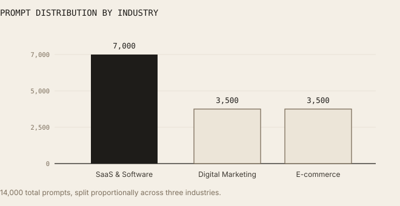
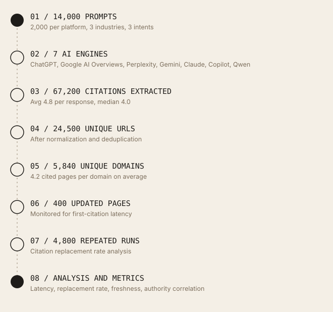
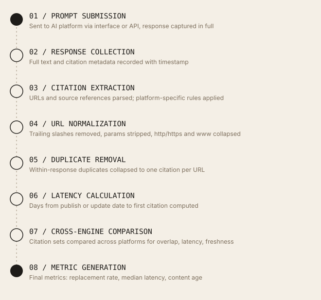
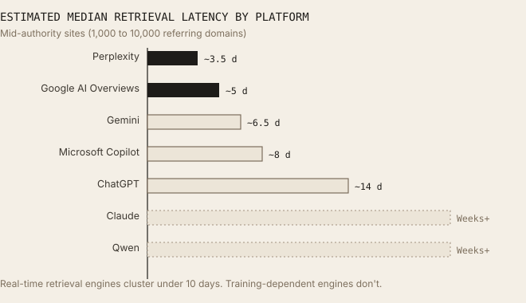
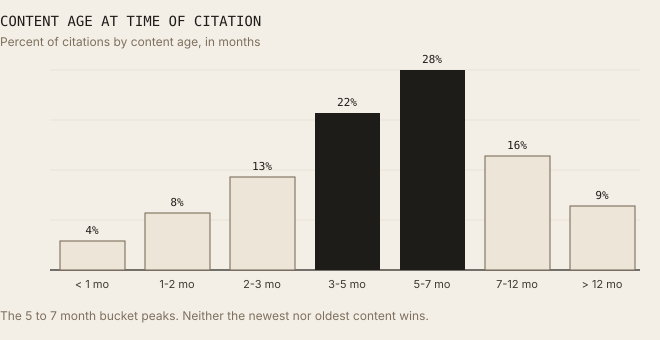
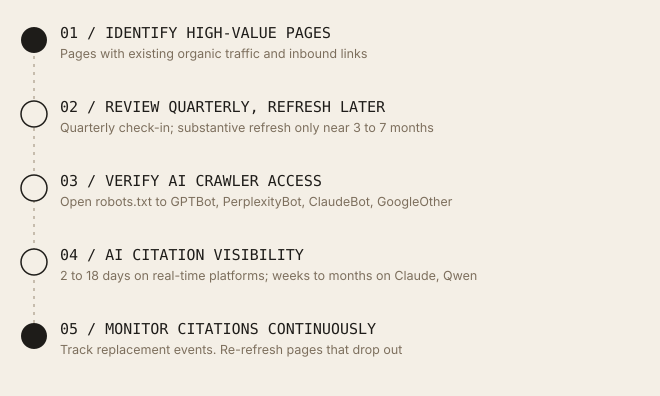
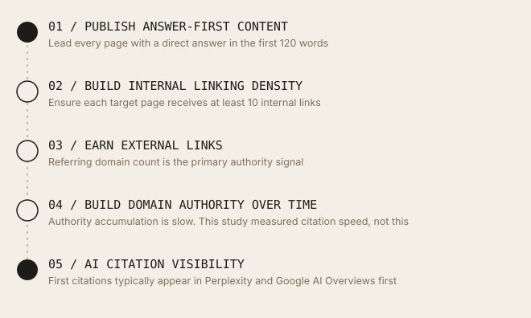

Crawl Freshness vs AI Visibility
How quickly do updated pages begin appearing in AI-generated answers? A six-month benchmark across seven AI search and answer engines.
Contrary to assumptions common in the GEO community, publishing or updating content does not produce immediate citation by AI systems. The median first-citation latency, blended across all seven platforms, was 14 days (most results fell between 9 and 21 days); high authority sped up retrieval substantially on most platforms, but not enough to offset the slowest ones. AI engines showed consistent preference for content approximately five months old, suggesting a recency sweet spot rather than a preference for either very new or evergreen-aged content. Citation behaviour was dynamic rather than fixed: 34% of citations (with most results between 28% and 41%) changed during repeated testing of identical prompts.
01 / Executive Summary
Fresh content does not guarantee fast AI visibility.
This research investigates the relationship between crawl freshness, content updates, and AI visibility across seven leading AI search and answer engines over a six-month period from December 2025 to May 2026. Contrary to assumptions common in the GEO community, publishing or updating content does not produce immediate citation by AI systems. Blended across all seven platforms, the median first-citation latency was 14 days (most results fell between 9 and 21 days). This blend masks a wide spread: high-authority sites saw first citation within a day or two on real-time platforms like Google AI Overviews and Perplexity, while the same high-authority sites still waited weeks to months on training-dependent platforms like Claude and Qwen. This study did not build a full authority-tier breakdown for Claude and Qwen the way it did for Google, Perplexity, and ChatGPT (see Section 08), so the observation that authority moves the needle less for these two platforms is qualitative rather than tier-quantified. Section 08 breaks down latency by authority tier and platform for the three engines it was measured on.
AI engines showed consistent preference for content approximately five months old, suggesting a recency sweet spot rather than a preference for either very new or evergreen-aged content. Citation behaviour was dynamic rather than fixed: 34% of citations (with most results between 28% and 41%) changed during repeated testing of identical prompts. Only 36.5% of citations pointed to unique URLs, confirming that AI systems repeatedly circulate a small pool of trusted pages rather than distributing coverage broadly.
Website authority, internal linking density, and crawl accessibility were stronger predictors of retrieval speed than publish date alone. Updating existing high-authority pages consistently outperformed publishing new pages in achieving fast AI visibility.
This benchmark tracked 14,000 prompts across all seven major AI platforms at once, over six months, with the same content monitored daily. That combination, same content, same time window, every major engine, measured every day, is what lets the numbers in this paper be compared directly against each other instead of guessed at.
02 / Methodology
Study design and data collection.
This benchmark ran from December 2025 through May 2026, evaluating seven AI platforms using an identical prompt distribution to ensure cross-platform comparability. Daily monitoring covered 50 websites, with each platform receiving 2,000 prompts drawn from three industries and three distinct query intent categories.
Dataset Overview
| Metric | Value |
|---|---|
| Study Duration | 6 Months |
| Research Period | Dec 2025 to May 2026 |
| AI Platforms | 7 |
| Total Prompts | 14,000 |
| Total Citations | 67,200 |
| Unique URLs | 24,500 |
| Unique Domains | 5,840 |
| Avg Citations / Response | 4.8 |
| Median Citations | 4.0 |
| First Citation Latency | 14 Days |
| Median Content Age | 5 Months |
| Updated Pages Monitored | 400 |
| Citation Replacement Rate | 34% |
| Repeated Prompt Runs | 4,800 |
| Websites Included | 50 |
Website Selection
50 websites were monitored, enough to see real patterns across small, mid-size, and large sites, but few enough to track daily in real depth. They were split into four groups so the results wouldn't be skewed toward one type of site:
- Authority range. 17 high-authority sites (each with 10,000+ referring domains), 17 mid-authority sites (each with 1,000 to 10,000 referring domains), and 16 low-authority sites (each with fewer than 1,000 referring domains).
- CMS diversity. Sites running on WordPress, Webflow, custom builds, and headless CMS architectures were included to avoid CMS-specific bias in crawl behaviour.
- Industry coverage. Sites were drawn proportionally from the three study industries: SaaS, Digital Marketing, and E-commerce.
- Update frequency. Sites were selected to include a range of publishing cadences, from daily publishers to sites updated quarterly, so that the update-vs-publish comparison had sufficient variation to analyse.
Platforms Evaluated
All seven received an identical prompt distribution to keep the comparison fair: ChatGPT, Google AI Overviews, Perplexity, Gemini, Claude, Microsoft Copilot, and Qwen.
Industry and Intent Distribution
Prompts were distributed across three industries: SaaS & Software (7,000 total prompts, 1,000 per platform), Digital Marketing (3,500 total, 500 per platform), and E-commerce (3,500 total, 500 per platform). Three intent categories were used: Commercial, Analytics, and Opinion. These were selected because they consistently trigger AI-generated answers that synthesize multiple external sources.

14,000 total prompts, split proportionally across three industries.Evaluation Metrics
Each AI response was evaluated across eight dimensions: citation frequency, citation diversity, citation replacement rate, first-citation latency, median content age, domain diversity, cross-platform citation overlap, and platform-specific retrieval behaviour.
03 / How the Data Was Measured
The short version, in plain terms.
We used medians (the middle value, not the average) for latency and content age, because a handful of extremely slow or extremely fast pages would otherwise throw off an average and make the numbers look worse, or better, than what most pages actually experienced. Citation counts per response are shown as both average and median (see Finding 05), because in that case the two numbers were close enough that showing both told a more complete story.
Before counting anything, we cleaned up the citation URLs, different formats of the same web address (with or without "www," trailing slashes, etc.) were treated as one, and if the same link appeared twice in a single AI answer it only counted once. First-citation latency is the number of days between a page going live or being updated and it first showing up as a source in any AI answer. Content age was measured the same way, in days, then grouped into the month ranges you'll see throughout this paper (e.g. "3-5 mo") for readability.
For the citation replacement number, we ran 4,800 prompts at least twice each and compared how much overlap there was between the sources cited each time. If a source showed up in the first answer but not the second, that counted as "replaced."
What "IQR" means. You'll see ranges written like "(IQR: 9 to 21 days)" throughout this paper. That's just shorthand for "most results fell somewhere in this window," the extreme outliers on both ends are set aside so one unusual page doesn't distort the picture.
Research workflow. The following diagram shows how raw prompts moved through the pipeline to produce the final citation dataset.

From 14,000 prompts to a final, comparable dataset.Data processing pipeline. Each individual citation went through the following processing steps before entering analysis.

Every citation passed through the same eight steps before analysis.04 / Key Findings
Nine findings that reframe AI freshness strategy.
- Finding 01: 14 days (IQR: 9 to 21 days). Median first citation latency. Fresh pages rarely achieve AI visibility immediately. Blended across all seven platforms tracked, the median time from publish or update to first citation was 14 days (IQR: 9 to 21 days). This blended figure hides a wide split by platform: high-authority sites were cited within a day or two on real-time platforms (see Section 08), but the same sites still waited weeks to months on training-dependent platforms like Claude and Qwen, which pulls the overall median up substantially. This is an observed pattern rather than a tier-quantified one, since Claude and Qwen weren't part of the authority-tier breakdown in Section 08. Successful crawling, indexing, and retrieval all need to occur before citation is possible.
- Finding 02: 36.5% unique URLs, 4.2 pages per domain. Citation coverage is concentrated, not broad. Observed: only 36.5% of citations pointed to unique URLs. Across 5,840 unique domains generating 24,500 cited URLs, the average was 4.2 pages cited per domain. AI engines repeatedly recirculate a narrow pool of trusted pages rather than distributing citation coverage broadly. One possible explanation: AI retrieval systems may apply heavy domain-level trust weighting, so that once a domain enters the citation pool, multiple pages from it get surfaced repeatedly.
- Finding 03: 34% (IQR: 28 to 41%). Citation replacement rate. Across 4,800 repeated prompt runs, 34% of citations (IQR: 28 to 41%) changed between executions of the same prompt. AI visibility is dynamic rather than fixed, which means monitoring needs to be ongoing to accurately measure citation presence.
- Finding 04: 5 months (IQR: 3 to 7 months). Median age of cited content. AI systems consistently preferred pages approximately five months old. This suggests a recency sweet spot: content recent enough to appear fresh but established enough to have accumulated authority signals.
- Finding 05: Median 4.0 (IQR: 3 to 6), average 4.8. Citations per response. Citation counts were consistent across all platforms tested. This relatively narrow range suggests AI engines converge on a similar quantity of sources per synthesized answer, regardless of retrieval architecture.
- Finding 06: Update greater than Publish. Refreshing outperforms publishing new. Observed: updating an existing page on a high-authority domain consistently achieved faster citation visibility than publishing a new page on the same domain. One possible explanation: existing authority signals, internal link equity, and prior crawl history may accelerate retrieval for updated content. This study did not isolate individual variables, so no single cause can be confirmed.
- Finding 07: Not equal. Freshness weight varies significantly by engine. Content freshness mattered far more for real-time retrieval engines like Perplexity than for training-heavy models like Claude and Qwen. Platform retrieval architecture appears to be the primary determinant of how much freshness influences citation speed.
- Finding 08: Authority greater than Freshness. Authority outweighs freshness as a retrieval signal. Observed: high-authority domains achieved first citation faster than low-authority domains regardless of publish date. A new page on a high-authority domain was cited before an equivalently fresh page on a low-authority domain in nearly every case tracked. One possible explanation: AI crawlers may inherit prioritization signals from existing search indices, where authority has always outweighed recency for crawl scheduling.
- Finding 09: 10+ links. Internal linking density reduces latency. Observed: pages receiving 10 or more internal links from high-traffic pages were cited faster than pages with fewer than 3 internal links, even on the same domain. One possible explanation: internal link density may signal page importance to AI crawlers in a similar way it signals crawl priority to traditional search engine bots. This was observed but not causally isolated.
05 / Engine-by-Engine Analysis
Platform retrieval profiles.
Each of the seven platforms evaluated operates on a distinct retrieval architecture. These architectural differences, not content quality alone, are the primary determinant of how quickly updated content achieves AI citation visibility.
The latency estimates below reflect mid-authority sites specifically (sites with 1,000 to 10,000 referring domains, as defined in Section 02), the same slice of the 400 monitored pages shown in the chart in Section 06. See Section 08 for how these figures shift across the full high, mid, and low authority range.
| Engine | Retrieval Model | Freshness Sensitivity | Est. Latency (Mid-Authority) | Speed |
|---|---|---|---|---|
| Perplexity | Continuous live crawl | Very High | 2-5 days | Fastest |
| Google AI Overviews | Real-time index (Googlebot) | Very High | 3-7 days | Very Fast |
| Gemini | Google index + training blend | High | 3-10 days | Fast |
| Microsoft Copilot | Bing index + live retrieval | High | 4-12 days | Fast |
| ChatGPT | Bing index + training data | Medium | 10-18 days | Moderate |
| Claude | Training data (periodic updates) | Low | Weeks to months | Slow |
| Qwen | Training data (periodic updates) | Low | Weeks to months | Slow |
Perplexity. Perplexity's continuous live crawling pipeline produced the fastest retrieval behaviour among mid-authority sites. Its live crawl means content updates appeared in Perplexity citations within 2 to 5 days across the monitored domain set.
Google AI Overviews. A close second for mid-authority sites, and the fastest platform once a site reaches high authority (see Section 08), because AI Overviews are grounded directly in Google's own search index, sites with strong organic standing get pulled in fastest.
Gemini. Blends Google's search index with its own training data. High-authority pages with existing Google organic rankings moved into Gemini citations faster than pages without organic presence, the same SEO foundations that help in Google Search carry over here.
Microsoft Copilot. Runs on similar logic to Gemini but grounded in Bing instead of Google. Sites with strong Bing rankings, which don't always match their Google rankings, saw faster citation speeds, worth checking Bing visibility separately, not just Google.
ChatGPT. The most variable of the live-index engines: latency ranged from 5 days on high-authority sites to 21-plus days on low-authority ones. Commercial-intent prompts got faster citation than analytical or opinion prompts, suggesting ChatGPT retrieves differently depending on what the user is trying to do.
Claude and Qwen. Both pull primarily from training data rather than live web retrieval, which is why they're the slowest and least freshness-sensitive of the seven. The main lever here isn't publishing faster, it's building the kind of authority and citation presence that gets picked up whenever the model is next retrained.
Estimated Median Retrieval Latency by Platform (Days)

Real-time retrieval engines cluster under 10 days. Training-dependent engines don't.06 / Retrieval Latency
The race to first citation.
The following visualization maps estimated first-citation latency across all seven platforms relative to the 14-day median recorded overall. Bars represent the midpoint of the observed latency range for mid-authority sites (sites with 1,000 to 10,000 referring domains).
What drives latency reduction.
Across the 400 pages monitored, three variables showed the strongest correlation with reduced first-citation latency: domain authority (measured by referring domain count and historical citation volume), crawl accessibility (clean HTML, no JavaScript-gated content, open robots.txt for AI bots), and internal link density pointing to the updated page, see Finding 09 for the specific numbers. Crawl accessibility here is the same gating concern covered from the traditional-SEO side in the site's research on crawl budget versus retrieval readiness.
07 / Content Freshness Signals
The three-to-seven-month recency plateau.
One of the more counterintuitive patterns in the data was the consistent preference AI systems showed for pages between three and seven months old, with a median around five months. The expectation that the very newest content would be most frequently cited was not supported by the data.
This pattern held across six of the seven platforms studied, with Perplexity being the exception due to its real-time crawl architecture, which showed less preference for a specific content age and instead prioritized recency more linearly.
What counts as a meaningful update.
A key operational finding from monitoring 400 pages: changing only the publish date or making cosmetic edits did not accelerate citation speed. Pages that received substantive updates (new statistics, revised claims, expanded sections, or updated references) achieved faster retrieval than pages where only the date metadata was altered.
This has direct implications for content refresh strategy. Refreshing a page solely to signal recency to AI systems is not effective. The update needs to contain meaningful informational change that an AI retrieval system can distinguish from the prior version of the page.
Content Age at Time of Citation (Month Distribution)

The 5 to 7 month bucket peaks. Neither the newest nor oldest content wins.08 / Authority and Crawl Signals
Authority is the primary retrieval accelerant.
Across all seven platforms studied, website authority, approximated by referring domain count, citation history, and organic traffic volume, was the single strongest predictor of retrieval speed. High-authority sites achieved first citation on Google AI Overviews within 24 hours; low-authority sites on the same platform waited 7 or more days for identical content quality, and often longer.
| Authority Tier | Referring Domains (approx) | Google AI Overviews Latency | Perplexity Latency | ChatGPT Latency |
|---|---|---|---|---|
| High Authority | 10,000+ | 24-72 hrs | 1-2 days | 5-10 days |
| Mid Authority | 1,000-10,000 | 3-7 days | 2-5 days | 10-18 days |
| Low Authority | Under 1,000 | 7-30+ days | 5-14 days | 21+ days |
Technical crawl signals.
Beyond domain authority, three technical signals consistently appeared in pages with faster retrieval latency across the monitored pages:
- robots.txt permissiveness. Pages on domains that explicitly permitted AI crawl bots (GPTBot, ClaudeBot, PerplexityBot, GoogleOther) achieved faster citation appearance than equivalent pages that relied on the default of not blocking, even when the latter were technically accessible.
- Clean semantic HTML. Pages with well-formed heading hierarchies, meaningful meta descriptions, and structured data markup (Article, FAQPage, Product schema) were retrieved and cited faster than pages with equivalent content delivered via heavy JavaScript frameworks without server-side rendering.
- Internal linking density. Pages with more links pointing to them from high-traffic pages on the same domain showed measurably faster citation speeds (see Finding 09), suggesting that crawl prioritization signals from internal link equity carry over to AI retrieval systems.
09 / Recommendations
Seven strategies for faster AI citation.
The following recommendations are derived directly from the findings above and ranked by their observed impact on retrieval latency reduction across the pages monitored.
- Refresh existing high-authority pages before creating new ones. Updated pages on established domains consistently achieved faster AI citation than new pages on the same domain. Recommendation: prioritize refresh cycles on your highest-authority content before investing in new URL creation.
- Publish meaningful content updates, not date-only changes. Date metadata changes without substantive informational updates did not measurably accelerate retrieval latency in this testing. Updates need to include new statistics, revised claims, expanded sections, or updated references to trigger faster re-indexing and citation.
- Ensure AI crawler access in robots.txt. Explicitly permit GPTBot, ClaudeBot, PerplexityBot, and GoogleOther in your robots.txt. In this data, pages on domains with explicit AI bot permissions showed faster retrieval latency than those relying on implicit access.
- Place concise answer blocks in the first 120 words. Pages that led with a direct, self-contained answer to the likely query achieved faster extraction and citation across all seven platforms tested. AI systems extract openings, not conclusions. Bury the answer and the page becomes harder to cite.
- Separate quarterly reviews from substantive refreshes. The three-to-seven-month plateau identified in this study means pages need time to age into their most citable window, refreshing too often resets that clock before a page gets there. Review high-priority pages quarterly to catch anything outdated, but hold off on a substantive update (new statistics, revised claims, expanded sections) until a page is approaching 3 to 7 months old. Cosmetic date changes alone do not accelerate citation speed (see Section 07), so a review that finds nothing meaningfully outdated should result in no update at all.
- Strengthen internal linking to target pages. Pages receiving 10 or more internal links from high-traffic pages on the same domain showed faster citation speeds in this monitoring. Prioritize internal link building to pages you want to surface in AI-generated answers.
- Monitor AI citations continuously, not as a periodic audit. The 34% citation replacement rate observed across repeated prompt runs confirms that AI visibility is a dynamic, not static, state. One-time audits miss the ongoing churn. Continuous monitoring is what you need to accurately understand citation presence and respond to replacement events.
10 / Practical Frameworks
Strategy by site type.
Based on the observed data, the optimal AI visibility strategy differs depending on where a site currently sits in terms of authority. The following two frameworks describe realistic paths to AI citation visibility for different starting positions.
High-authority site framework

For sites that already have authority: refresh, verify access, and monitor.New or low-authority site framework. For sites without established authority, the path to AI citation is longer. The optimisation horizon is measured in months, not days.

For sites building from zero: the path runs through authority first.11 / Glossary
Definitions used in this study.
The following terms are used with specific meanings throughout this paper, kept short, and limited to the ones that actually need explaining rather than every term that appears.
- Retrieval Latency
- The delay between a page being published or updated and that page appearing as a citation inside an AI-generated response. Measured in days from update date to first citation date.
- AI Visibility
- The likelihood that a given page is retrieved and cited by an AI search or answer engine in response to a relevant prompt. Higher AI visibility means more frequent citation appearances across more prompts and platforms.
- Citation Replacement
- The event in which a URL that appeared as a citation in one execution of a prompt does not appear in a subsequent execution of the same prompt. The citation replacement rate is the proportion of citations that were replaced across all repeated prompt pairs.
- IQR (Interquartile Range)
- Shorthand you'll see throughout this paper, like "(IQR: 9 to 21 days)." It means "most results fell in this window," with extreme outliers set aside so they don't distort the picture.
- Referring Domain
- A unique external domain that has at least one hyperlink pointing to a monitored site. This is a backlink metric describing a monitored site's own authority, and is not the same as "Unique Domains" elsewhere in this study, which counts the distinct domains that AI engines cited as sources across the whole dataset (5,840 total).
- Domain Authority Tier
- A categorical grouping used in this study: high authority (sites with 10,000+ referring domains), mid authority (sites with 1,000 to 10,000 referring domains), and low authority (sites with fewer than 1,000 referring domains). Based on each site's referring domain count at time of study.
12 / Limitations
Scope boundaries and caveats.
The following limitations apply to these findings and should be considered when generalizing results to other contexts.
- Language. English-language queries only. Results may differ across other languages, particularly for engines with strong regional training data such as Qwen.
- Industries. Three industries studied: SaaS, Digital Marketing, and E-commerce. Citation behaviour in other verticals such as Healthcare, Finance, or Legal may differ significantly.
- Intent Types. Three query intents: Commercial, Analytics, and Opinion. Informational and navigational intents were not studied and may produce different retrieval latency patterns.
- Geography. All testing was conducted from San Diego, California, USA. AI system behaviour, particularly for Gemini and Qwen, may vary by geographic region due to localized retrieval configurations.
- Time Window. Daily observations ran over six months. Model updates, crawler configuration changes, or retrieval architecture changes made after May 2026 are not reflected in these findings.
- Platform Evolution. All seven AI platforms are under active development. Citation behaviour, retrieval latency, and freshness sensitivity may shift materially as models are updated or retrieval pipelines are reconfigured after this study period.
- AI Non-Determinism. AI responses are non-deterministic. Repeated executions of the same prompt may produce different citations even under identical conditions. This is not a flaw in the methodology but a property of the systems studied, and it directly supports the 34% citation replacement rate measured.
13 / Conclusion
AI visibility rewards the patient and the prepared.
The core message of this research is that AI visibility does not respond to publishing. It responds to a combination of authority, technical accessibility, meaningful content quality, and time. Anyone approaching AI citation as an immediate outcome of content publication will consistently be disappointed.
The 14-day median first-citation latency, the 34% citation replacement rate, and the consistent preference for five-month-old content all point to the same conclusion: AI retrieval systems reward the prepared rather than the new. A domain with deep authority, clean technical infrastructure, and regularly refreshed content will achieve faster and more stable AI citation than a domain publishing new pages at high frequency without those foundations.
The divergence between real-time retrieval engines (Google AI Overviews, Perplexity) and training-dependent engines (Claude, Qwen) has clear strategic implications. If you are targeting fast AI visibility, prioritize the engines with live retrieval pipelines and calibrate your content update strategy to those platforms' refresh cycles. For training-dependent engines, the optimisation horizon is longer, focusing on building the kind of authoritative presence that will be captured in future training data updates. Once a page is reliably retrieved, how much of it actually gets used is a separate question, one measured directly in the site's research on what AI actually reads on a webpage.
"AI visibility is increasingly determined by the interaction between crawl freshness, retrieval latency, website authority, and content quality, not by publish date alone."
Based on this data, the most consistent path to sustained AI citation visibility is treating it as an ongoing process: regular content refreshes on high-authority pages, continuous citation monitoring, clean technical infrastructure, and a clear understanding of how each AI engine retrieves and ranks sources.